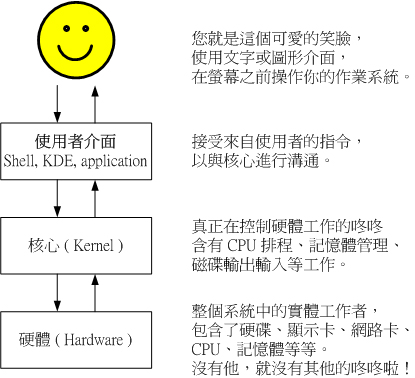

这应该是个蛮有趣的话题：『什么是 Shell ？』相信只要摸过计算机，对于操作系统（不论是 Linux 、 Unix 或者是 Windows ）有点概念的朋友们大多听过这个名词，因为只要有『操作系统』那么就离不开 Shell 这个东西。不过，在讨论 Shell 之前，我们先来了解一下计算机的运作状况吧！举个例子来说：当你要计算机传输出来『音乐』的时候，你的计算机需要什么东西呢？这就是基本的一个输出声音的需要的步骤！那么也就是说，你必须要『输入』一个指令之后，『硬件』才会透过你下达的指令来工作！嘿嘿！那么硬件如何知道你下达的指令呢？那就是 kernel （核心）的控制工作了！了解了吗？没错！也就是说，我们必须要透过『 Shell 』将我们输入的指令与 Kernel 沟通，好让 Kernel 可以控制硬件来正确无误的工作！基本上，我们可以透过底下这两张图来说明一下：
- 当然就是需要你的硬件有『声卡芯片』这个硬件配备，否则怎么会有声音；
- 操作系统的核心可以支持这个芯片组，当然还需要提供芯片的驱动程序；
- 需要使用者（就是你）输入发生声音的指令！

基本上，替我们工作的是『硬件』，而控制硬件的是『核心』，再来，我们使用者乃是利用『Shell』控制一些 kernel 提供的 『工具 Utility』来操控硬件替我们正确的工作。再进一步来说，由于 kernel 听不懂人类的语言，而人类也没有办法直接记得 kernel 的语言，所以两者的沟通就得藉由 shell 来支援了！（其实早期的 DOS 的文字接口也是使用 shell 来沟通呀！那个 shell 的名称就叫做 command.com ，还记得吗？ ^_^）
以字面上的意思来说， kernel 是『核心』的意思，而 Shell 是『壳』的意思，呵呵！也就是说， shell 是最外头的咚咚！而 kernel 乃是最内层的的咚咚啦！核心是操作系统的最底层的东西！这个核心里头包括了各种的支持硬件的工具！当然，如果你的硬件太新，而你的 kernel 并没有支持的话，那么很抱歉，你的 Shell 能力再怎么强，也没有办法使硬件工作的！这样可以了解了吗？呵呵！没错！使计算机主机工作的正是核心的任务，但是操作核心来替使用者工作的，却是 shell 喔！因此，有时候你的 shell 搞了老半天，硬件却不能工作的时候，请注意，您的『核心』是否正确呢？阿！扯远了！这是 kernel 章节才要说的东西??
- 我干嘛要学习 Shell 呢？
常常听到这个问题：『我干嘛要学习 shell 呢？不是已经有很多的工具可以提供我设定我的主机了？我为何要花这么多时间去学指令呢？不是以 X-Window 按一按几个按钮就可以搞定了吗？为什么要这么麻烦？』唉?还是得一再地强调，X-Window 还有 Web 接口的设定工具例如 webmin 是真的好用的家伙，他真的可以帮助我们很简易的设定好我们的主机，甚至是一些很进阶的设定都可以帮我们搞定。但是 VBird 在序章里面也已经提到过相当多次了， X-Window 的接口虽然亲善，功能虽然强大，而 web 接口的工具也可以提供我们很友善的服务，但是毕竟他是整合的一个套件而已，并非是一个完整的套件，所以某些时候当你升级或者是使用其它套件管理模块( 例如 tarball 而非 rpm 档案等等 )时，就会造成设定的困扰了，此外，远程联机时，文字接口的传输速度一定比较快，而且，较不容易出现断线或者是信息外流的问题，因此， shell 真的是得学习的一项工具。而且，他可以让您更深入 Linux ，更了解他，而不是只会按一按鼠标而已！所谓『天助自助者！』多摸一点文字模式的东西，会让你与 Linux 更亲近呢！
有些朋友也很可爱，常会说：『我学这么多干什么？又不常用，也用不到！』嘿嘿！有没有听过『书到用时方恨少？』当你的主机一切安然无恙的时候，您当然会觉得好像学这么多的东西一点帮助也没有呀！万一，某一天真的不幸给他中标了，您该如何是好？是直接重新安装？还是先追踪入侵来源后进行漏洞的修补？或者是干脆就关站好了？这当然涉及很多的考虑，但就以 VBird 的观点来看，多学一点总是好的，尤其我们可以有备而无患嘛！甚至学的不精也没有关系，了解概念也就 OK 啦！毕竟没有人要您一定要被这么多的内容啦！了解概念就很了不起了！
此外，如果您真的有心想要将您的主机管理的好，那么良好的 shell 程序编写是一定需要的啦！就 VBird 来说，我管理的主机虽然还不算多，只有区区不到十部，但是如果每部主机都要花上几十分钟来查阅他的 log file 以及相关的信息，那么我可能会疯掉！基本上，也太没有效率了！这个时候，如果能够藉由 shell 提供的命令重导向( 或称数据流重导向 )，以及管线命令，呵呵！那么我分析 log file 只要花费不到十分钟就可以看完所有的主机之重要信息了！相当的好用呢！
由于学习 shell 的好处真的是多多啦！所以，如果您是个系统管理员，或者有心想要管理系统的话，那么 shell 这个东西与 shell scripts 这个东西，真的真的有必要看一看！
知道什么是 Shell 之后，那么我们来了解一下 Linux 使用的是哪一个 shell 呢？什么！哪一个？难道说 shell 不就是『一个 shell 吗？』哈哈！那可不！由于早年的 Unix 年代，发展者众，所以由于 shell 依据发展者的不同就有许多的版本，例如常听到的 Bourne SHell (sh) 、在 Sun 里头预设的 C SHell、 商业上常用的 K SHell、, 还有 TCSH 等等，每一种 Shell 都各有其特点。至于 Linux 使用的这一种版本就称为『 Bourne Again SHell （简称 bash ） 』，这个 Shell 是 Bourne Shell 的增强版本，也是基准于 GNU 的架构下发展出来的呦！在介绍 shell 的优点之前，先来说一说 shell 的简单历史吧：第一个流行的 shell 是由 Steven Bourne 发展出来的，为了纪念他所以就称为 Bourne shell ，或直接简称为 sh ！而后来另一个广为流传的 shell 是由柏克莱大学的 Bill Joy 设计依附于 BSD 版的 Unix 系统中的 shell ，这个 shell 的语法有点类似 C 语言，所以才得名为 C shell ，简称为 csh ！由于在学术界 Sun 主机势力相当的庞大，而 Sun 主要是 BSD 的分支之一，所以 C shell 也是另一个很重要而且流传很广的 shell 之一（因为太多的程序设计师使用的就是 C 语言啦！）！
好了，那么 BASH 是怎么一回事呢？这个 shell 是 GNU 计划中重要的工具软件之一，目前也是 GNU 操作系统中标准的 shell ，他主要兼容于 sh ，并且依据一些使用者需求，而加强的 shell 版本，可以说目前几乎所有的 Linux distribution 都是使用 bash 作为管理核心的主要 shell ！因此，不论您使用的是那个 distribution ，你都难逃需要学习 bash 的宿命啦！那么这个 shell 有什么好处，干嘛 Linux 要使用他作为预设的 shell 呢？ BASH 主要的优点有底下几个：
- 命令编修能力（类似 DOS 的 doskey 功能）：
使用 bash 里头，个人认为相当棒的一个功能就是『他能记忆使用过的指令！』这功能真的相当的棒！因为我只要在指令列按『上下键』就可以找到前一个输入的指令！而在 Mandrake 9.0 预设的指令记忆功能可以到达 1000 个！也就是说，你曾经下达过的指令都被记录下来了，记录的档案在你的家目录内的 .bash_history ！不过，需要留意的是， ~/.bash_history 记录的是前一次登入以前所执行过的指令，而至于这一次登入所执行的指令都被暂存在暂内存中，当您成功的注销系统后，该指令记忆才会记录到 .bash_history 当中！这有什么功能呢？最大的好处就是可以『查询曾经做过的举动！』，如此可以知道你的执行步骤，那么就可以追踪您曾下达的指令，以作为除错的工具！但如此一来也有个烦恼，就是如果被黑客入侵了，那么他只要翻你曾经执行过的指令，刚好你的指令又跟系统有关（例如直接输入 MySQL 的密码在指令列上面）那么很容易就被破解你的 Linux 主机！所以，最好是将记录的指令数目减小一点较好！
- 档案比对补全功能（比对数据正确性）：
这个功能也相当的棒！主要分为指令补全与文件名称补全：
- 指令补全：如果在执行命令的时候不想按下太多的按键，例如指令 pcprofiledump 够长吧！好了，那么如果你输入了 pcprofile 之后，再按下 [Tab] 按键的话，那么 bash 马上会自动的将后面的 dump 接上来！那如果有重复的指令呢？那么按下两次 [Tab] 将会把所有重复的指令给他列出来！那么就有个特殊的案例啦，就是『直接在提示字符后面连按两次 <tab> 键，则系统会将所有可以使用的指令都列出来！』那么如果我想要知道目前系统里面，所以 b 开头的指令呢？呵呵！就是按下 b 之后，连按两次 <tab> 就可以知道啦！
- 文件名称补全：此外，如果你用 vi 来读取某个档案时，例如 /etc/man.config 这个档案好了，那么您可以输入 vi /etc/man. 之后，直接按下 <tab> 按键，那么该文件名称就会被自动的补齐！呵呵！很方便，而且对于文件名称或者指令名称的正确性上面，帮助还蛮大的吧！是的！真的是很方便的功能，所以，有事没事，在 bash shell 底下，多按几次 <tab> 是一个不错的习惯啦！
- 命令别名(alias)设定功能：
假如我需要知道这个目录底下的所有档案（包含隐藏档）及所有的档案属性，那么我就必须要下达 ls -al 这样的指令列，唉！真麻烦，有没有更快的取代方式？呵呵！就使用命令别名呀！例如我最喜欢直接以 lm 这个自订的命令来取代上面的命令，也就是说， lm 会等于 ls -al 这样的一个功能，嘿！那么要如何作呢？就使用 alias 即可！你可以在指令列输入 alias 就可以知道目前的命令别名有哪些了！也可以直接下达命令来设定别名呦：alias lm='ls -al'
- 工作控制(jobs)、前景背景控制：
这部分我们在之后的资源管理章节中会再提及！使用前、背景的控制可以让工作进行的更为顺利！至于工作控制(jobs)的用途则更广，可以让我们随时将工作丢到背景中执行！而不怕不小心使用了 [Ctrl] + C 来停掉该程序！真是好样的！此外，也可以在单一登入的环境中，达到多任务的目的呢！
- Shell scripts 的强大功能：
在 DOS 年代还记得将一堆指令写在一起的所谓的『批次档』吧？在 Linux 底下的 shell scripts 则发挥的更为强大的功能，可以将您日常生活当中常需要下达的连续指令写成一个档案，该档案并且可以透过对谈交互式的方式来进行主机的侦测工作！也可以藉由 shell 提供的环境变量及相关指令来进行设计，哇！整个设计下来几乎就是一个小型的程序语言了！该 scripts 的功能真的是超乎我的想象之外！以前在 DOS 底下需要程序语言才能写的东西，在 Linux 底下使用简单的 shell scripts 就可以帮你达成了！真的利害！！这部分我们在后续章节再来谈！
在了解了 BASH 的优点之后，再来我们要来讨论的是：那如何在 Shell 提供的环境中下达指令呢？其实很简单的，下达指令的方式为：很简单吧！OK！那么再来一个问题：『Shell 是什么时候开始接管 Linux 主机的！？』我们在后面会再提到『开机流程』的介绍，这里先跳过去，假设你的机器已经开机成功了，那么主机便进入等待使用者 login 的状态。当使用者输入了账号与密码，并且顺利的 pass 之后，经过了 shell 的环境变量档案读取功能，最后，使用者进入自己的『家目录』之后，例如 root 的家目录在 /root 底下，一般使用者的家目录则在 /etc/passwd 这个档案里面规定，那么主机就已经丢了一个程序称为 bash 的给你操作！
[root@test /root]# command [-options] parameter1 parameter2 ...
指令 选项 参数(1) 参数(2)1. command 为指令的名称，例如变换路径的指令为 cd 等等；
2. 中刮号[]并不存在于实际的指令中，而加入参数设定时，通常为 - 号，有时候完整名称会输入 -- 符号；
3. parameter1 parameter2.. 为依附在 option 后面的参数，或者是 command 的参数；
4. command, -options, parameter1.. 这几个咚咚中间以空格来区分，不论空几格 shell 都视为一格；
5. 指令太长的时候，可以使用 \ 符号来跳脱 [Enter] 符号，使指令连续到下一行。实例：
[root@test /root]# ls -al /root <==以 ls 列出 /root 这个目录中的隐藏文件与相关的属性参数；
[root@test /root]# ./configure --prefix=/usr/local --with-tcp_wrappers \
> --with-pam <==这两行实际上是同一行的指令，但是加上 \ 跳脱符号后，指令可以连续到下一行！
[root@test /root]# ls -al /root <==这个指令与第一个相同，空格符不论几个，仅视为一个来处理。
再继续研究 BASH 之前，我们要就变量这个东西来讨论一番，因为在主机里面有太多的数据需要进行存取了，而这些数据都是一些服务所必须的，例如 mail 的存取路径在 /var/spool/mail 、家目录预设在 /home/useraccount 等等，当然我们可以改变这些个变量，但是如果该变量是直接深植于套件当中，那么当你修改了某些参数之后，嘿嘿！你的套件就必须要『由原始码直接更新再编译』才行！这样似乎很麻烦，所以，就会有变量这个好东西出来了！此外，例如我们在执行程序的时候，系统怎么知道你的 ls 这个指令放在哪里？原来是有 PATH 这个变量，系统会透过这个变量里面所设定的路径去依序寻找该指令系统，如果找不到的话，那么才在屏幕上显示『 command not found 』字样！这些还都只是系统预设的变量的目的，如果是个人的设定方面：例如你要写一个大型的 script （批次文件）时，有些数据因为可能由于使用者习惯的不同而有差异，比如说路径好了，由于该路径在 script 被使用在相当多的地方，如果下次换了一部主机，都要修改 script 里面的所有路径，那么我一定会疯掉！这个时候如果使用变量，而将该变量的定义写在最前面，后面相关的路径名称都以变量来取代，嘿嘿！那么你只要修改一行就等于修改整篇 script 了！方便的很！所以，良好的程序设计师都会善用变量的定义！（这个部分我们在底下还会再提到！）
举个简单的例子来说， sendmail 的 smtp 存放 mail 路径是经由 /etc/profile 里头的 MAIL="/var/spool/mail/$USER"来设定的，而当我修改了上面这一个咚咚，然后重新开机之后，嘿嘿嘿嘿！我的邮件就可以存放到不同的路径去了！而且不会有问题！可以顺利的『在 Linux 主机上面』收发。然而问题发生在 pop3 这个服务上面，由于 pop3 的预设路径是在 source code 里头，而且就正是 /var/spool/mail 这个路径，也就是说，不论我怎么修正我的『变量』， pop3 都不为所动！唉～真惨，所以就无法直接以 pop3 来收信了（例如 OutLook 就不能工作了）！会发生密码不接受的问题呢！
如果说的学理一点，那么由于在 Linux System 下面，所有的执行续都是需要一个执行码，而就如同上面提到的，你『真正以 shell 来跟 Linux 沟通，是在正确的登入 Linux 之后！』这个时候你就有一个 bash 的执行程序，也才可以真正的经由 bash 来跟系统沟通！而在进入 shell 之前，也正如同上面提到的，由于系统需要一些变量来提供他数据的存取（或者是一些环境的设定参数值，例如是否要显示彩色等等的），所以就有一些所谓的『环境变量』需要来读入系统中了！这些环境变量例如 PATH、HOME、MAIL、SHELL等等，都是很重要的，为了区别与自订变量的不同，环境变量通常以大写字符来表示呢！
说了那么久，那么到底『什么是变量』呢？简单的说，『变量就是以一组文字或符号等，来取代一些设定或者是一串保留的数据！』，例如：『VBird』就是『鸟哥』，所以当你读取 VBird 的时候，系统自然就会知道！哈！那就是鸟哥！最简单的例子可以取 PATH 来说明！如果你对于『相对路径与绝对路径』还有点印象的话，那么应该晓得『要下达正确的指令，应该需要指定路径与文件名』才行！例如你的 ls 指令应该需要以『/bin/ls』来下达指令才对，那么为何你在任意的路径下都可以执行 ls 呢？而不需要指定路径呢？这是因为系统已经预设了一些『搜寻路径(PATH)』了，所以当你需要执行一些指令的时候，系统就会依照该 PATH 的设定来进行指令的搜寻！而这个 PATH 就是所谓的变量了！那么如何『显示变量』呢？这就需要使用到 echo 这个指令啦！
- echo
显示变量内容
语法：就如同上面的范例，当我们要显示目前的 PATH 这个变量时，使用了 echo ，而为了要分辨是否为变量，那么 Linux 系统预设变量名称前面会加上一个『 $ 』符号，所以就必须要写成 echo $PATH ！
[test @test test]# echo $variable
参数说明：
范例：
[test @test test]# echo $PATH
/bin:/sbin:/usr/sbin:/usr/bin:/usr/local/sbin:/usr/local/bin:/usr/loc
al/bin:/bin:/usr/bin:/usr/X11R6/bin
例题：请在屏幕上面显示出您的环境变量 PATH, HOME 与 MAIL：
答：[root@test root]# echo $PATH
/sbin:/usr/sbin:/bin:/usr/bin:/usr/X11R6/bin:/usr/local/bin:/usr/local/sbin
[root@test root]# echo $HOME
/root
[root@test root]# echo $MAIL
/var/spool/mail/root
有多少的环境变量呀？使用 env 与 set 来看看：
嗯！既然环境变量是挺重要的，那么到底有多少的环境变量在 Linux 系统中呢？呵呵！你可以简单的使用 env 就可以知道！『基本上，在 Linux 预设的情况中，使用{大写的字母}来设定的变量一般为系统内定需要的变量』，底下列出 Linux 系统中 预设的变量内容：
- env
显示目前系统中主要的预设变量内容
语法：env environment 的简写，所以说，这个指令主要在将目前系统中的主要变量读出来！但是，不是说我们还可以自订变量吗？因此，除了 env 这个读取环境变量的指令之外，还有一个可以将目前系统中所有的变量数据都读出来的指令，称为 set ！set 除了会将上面的数据都给他读出来之外，还会有额外的这些信息也一起读入（通常都与使用者的设定有关！）
[test @test test]# env
ENV=/root/.bashrc <==使用者自订环境变量的设定档案
HISTSIZE=1000 <==目前的指令记忆数量
HOME=/home/test <==登入者的家目录
HOSTNAME=test.adsldns.org <==这部主机的主机名称
HOSTTYPE=i386 <==这部主机的硬件等级大致状态(i386, i686..)
INPUTRC=/etc/inputrc <==一些 shell 加载的数据文件设定处
LANGUAGE=C <==预设语系的资料
LANG=zh_TW.Big5
与 LANGUAGE 类似，这个则是各个 linux distribution 常用的预设语系变量，由于我的 Mandrake 使用中文安装，所以预设语系是中文，亦即 zh_TW.Big5 ，如果我要修改这个变量，可以到 /etc/sysconfig/i18n 去修改！底下的 LC_xxx 均是与预设的表示语系有关的变量，其中比较有趣的是 LC_TIME ，如果在文字接口下，最好将 LC_TIME 改成美规日期的显示方式，才不会有乱码！
LC_COLLATE=zh_TW.Big5
LC_CTYPE=zh_TW.Big5
LC_MESSAGES=zh_TW.Big5
LC_MONETARY=zh_TW.Big5
LC_NUMERIC=zh_TW.Big5
LC_TIME=en
LESSOPEN=|/usr/bin/lesspipe.sh %s <==用来设定 less 使用的一支 script 档案
LOGNAME=test <==登入者的账号MACHTYPE=i586-mandrake-linux-gnu
主机的硬件配备等级 i586 为 P MMX 等级，至于 K7 及 PIII 之后的，就是 i686 等级！MAIL=/var/spool/mail/test <==登入者的邮件预设放置地点
OSTYPE=linux-gnu <==操作系统的形式(linux-gnu)
PATH=/usr/local/bin:/usr/local/sbin:/usr/bin:/usr/sbin:/bin:/sbin:/home/test/bin
PWD=/home/test <==目前登入者所在的目录(当下的目录)
SHELL=/bin/bash <==登入者使用的 shell 类型
USER=test <==目前这个登入者的使用者名称
- set
显示目前系统中全部的变量内容
语法：set 的输入就是直接输入 set 即可！他除了会显示出目前的『环境变量』之外，也会显示出您的『自订变量』呢！那么有哪些与使用者较有相关性的自订变量呢？我们上面仅列出部分常见的变量值！
[test @test test]# set
BASH=/bin/bash <==BASH 的主程序放置路径
BASH_VERSINFO=([0]="2" [1]="05" [2]="8" [3]="1" [4]="release" [5]="i386-redhat-linux-gnu") <==BASH 版本信息
BASH_VERSION=$'2.05.8(1)-release' <==BASH 的版本
COLORS=/etc/DIR_COLORS <==使用颜色
COLUMNS=100 <==目前这个终端机使用的字段有几个字符距离
HISTFILE=/home/vbird/.bash_history <==目前用来存过往指令的档案，为一个隐藏档
HISTFILESIZE=1000 <==存起来的档案中，指令的最大数(只纪录 1000 个指令)
IFS=$' \t\n' <==预设的分隔符
langfile=/home/vbird/.i18n <==语系选择的档案
LINES=40 <==目前光标所在的位置为第几行
MAILCHECK=60 <==每隔多久检查一次有无新信件(秒数)
PPID=24572 <==目前 bash 这个父程序的 ID ！
PROMPT_COMMAND=$'echo -ne "\\033]0;${USER}@${HOSTNAME%%.*}:${PWD/$HOME/~}\\007"' <==提示字符显示的内容
SHELLOPTS=braceexpand:hashall:histexpand:monitor:history:interactive-comments:emacs
SUPPORTED=zh_TW.Big5:zh_TW:zh:en_US:en <==支援的语系
TERM=xterm <==终端机形式
UID=500 <==登入者的使用者 ID (UID)
$ <==目前 shell 的 PID
?
最后一个命令的回传值，若之前的命令被正确的执行会传回 0 ，否则会传为 1 或其它错误代码。
使用 set 除了会将系统的默认值秀出来之外，连带的所有的你自己设定的变量也会被秀出来！同时需要注意的是，若当时有相当多人同时在在线的话，那么你的变量只能给自己使用（除非改的是系统的预设参数档，如 /etc/profile ），而不会干扰到别人的！就如同前面所说的，由于你登入 Linux 之后会取得一个 PID ，而你的设定将只对这个 PID 与子程序有关！此外，这次登入所进行的变量设定，如果没有更动到设定档，那么这次设定的变量在下次登入时将被取消掉（因为程序 PID 不见！）！所以，如果你想要你的变量每次都能在你登入的时候自动就设定好了，那么就必须将你的设定写入登入时加载的设定档！
上面的变量中，比较有趣的是 $ 与 ? 这两个咚咚，尤其是 ? 这个变量，如果您上一个命令执行的过程中没有错误，那么这个变量就会被设定为 0 ，如果您的上个命令有错误讯息，那么这个变量会变成 1 或其它的错误代码！现在马上动手试看看您的上个指令执行成果为何？
echo $?
- 变量设定规则：
好了，我们知道了一些系统的预设变量了，但是如果是我自己想要设定一些我自己的变量，该如何设定呢？有什么规则需要遵守？呵呵！在说明之前，可能要来让大家了解一下为什么自己会想来设定变量？
底下我们举几个例子来说明一下：
| 一般变量设定： [tets @test test]# 12name=VBrid <==错误的！因为变量开头不能是数字！ [test @test test]# name = VBird <==错误的！因为等号两边不能直接接空白！ [test @test test]# name=VBird <==正确的！echo $name 显示 VBird [test @test test]# name=VBird name <==错误的！需要加上双引号！不然会显示错误！ [test @test test]# name="VBird name" <==正确的！echo $name 显示 VBird name [test @test test]# name="VBird's name" <==正确的！ 变量累加设定： 变量延伸到下一个子程序： 指令中的指令： 取消变量设定： |
| 例题：在变量的设定中，单引号与双引号有什么不同呢？ 答： 单引号与双引号的最大不同在于双引号仍然可以保有变量的内容，但单引号内仅能是一般字符，而不会有特殊符号。我们以底下的例子做说明：假设您定义了一个变量， name=VBird ，现在想以 name 这个变量定义出 myname 显示 VBird its me 这个内容，要如何订定呢？[root @test root]# name=VBird发现了吗？没错！使用了单引号的时候，那么 $name 将失去原有的变量内容，仅为一般字符的显示型态而已！这里必需要特别小心在意！ |
| 例题：在指令下达的过程中， quote ( ` ) 这个符号代表的意义为何？ 答： 在一串指令中，在 ` 之内的指令将会被先执行，而其执行出来的结果将做为外部的输入信息！例如 uname Cr 会显示出目前的核心版本，而我们的核心版本在 /lib/modules 里面，因此，你可以先执行 uname Cr 找出核心版本，然后再以『 cd 目录』到该目录下，当然也可以执行cd /lib/modules/`uname Cr`直接到该目录下去！ |
- export
当你取得一个 bash 之后，亦即得到了一个程序了，但是若你再次的执行一次 bash ，那么你将进入『子程序』，这个程序的概念我们在资源管理章节中再详谈，这里您先有个概念即可。那么由于您已经进入了该子程序，所以在父程序中的变量设定将不再继续的存在。如您想要让该变量内容继续的在子程序中使用，那么就请执行：
export 变数
！这个东西用在『引用他人的档案或者其它程序』时，相当的重要的！尤其像我常常两三个档案互相引用来引用去的，如果忘记设定 export 的话，那么不同的档案中的相同变量值，将需要一再地重复设定才行！所以，我只要在头一个档案使用 export 的话，那么后续的档案引用时，将会把该变量内容读进来！好用的很?而，如果仅下达 export 而没有接变量时，那么此时将会把所有的『环境变量』秀出来喔！也就是说， export 可以将一般自订的变量变成环境变量！
[root @test root]# export
declare -x BASH_ENV="/root/.bashrc"
declare -x CVSROOT="/usr/local/cvs/src/master"
declare -x HISTSIZE="50"
declare -x HOME="/root"
declare -x HOSTNAME="test.adsldns.org"
declare -x HOSTTYPE="i386"
declare -x INPUTRC="/etc/inputrc"
declare -x LANG="en_US"
declare -x LESSOPEN="|/usr/bin/lesspipe.sh %s"
declare -x LOGNAME="root"
declare -x LS_COLORS="no=00:fi=00:di=01;34:ln=01;36:pi=40;33:so=01;35:
bd=40;33;01:cd=40;33;01:or=01;05;37;41:mi=01;05;37;41:ex=01;32:*.cmd=
01;32:*.exe=01;32:*.com=01;32:*.btm=01;32:*.bat=01;32:*.sh=01;32:*.csh
=01;32:*.tar=01;31:*.tgz=01;31:*.arj=01;31:*.taz=01;31:*.lzh=01;31:*.z
ip=01;31:*.z=01;31:*.Z=01;31:*.gz=01;31:*.bz2=01;31:*.bz=01;31:*.tz=01;
31:*.rpm=01;31:*.cpio=01;31:*.jpg=01;35:*.gif=01;35:*.bmp=01;35:*.xbm=
01;35:*.xpm=01;35:*.png=01;35:*.tif=01;35:"
declare -x MACHTYPE="i386-redhat-linux-gnu"
declare -x MAIL="/var/spool/mail/root"
declare -x MANPATH=":/usr/local/netcdf/man"
declare -x OSTYPE="linux-gnu"
declare -x PATH="/usr/local/pgi/linux86/bin:/bin:/sbin:/usr/sbin:/usr/bin:
/usr/local/sbin:/usr/local/bin:/usr/local/bin:/bin:/usr/bin:/usr/X11R6/bin
:/usr/local/netcdf/bin"
declare -x PGI="/usr/local/pgi"
declare -x PWD="/root"
declare -x SHELL="/bin/bash"
declare -x SHLVL="1"
declare -x SSH_TTY="/dev/pts/0"
declare -x TERM="xterm"
declare -x USER="root"
- unset
就是直接将该变量的内容拿掉：
unset 变数
- 变量的有效范围：
由前面的 export 以及相关的说明，你可以很清楚的知道一件事情，那就是，『变量的设定只在目前这个 shell 环境当中存在，在下个或者是在子程序中 ( 子 shell ) 将不会存在！』要让变量在下个程序也可以继续的使用，大概就是使用 export 这个咚咚啦！此外，其实除了 shell 的父、子程序外，在脚本( scripts )的编写当中，由于有的软件会使用到 2 个以上的 scripts 做为一个完整的套件！也就是说，假如你有两支程序，一支为 scripts1.sh 以及 scripts2.sh ，而 scripts2.sh 会去引用 scripts1.sh 的变数，这个时候，嘿嘿！你在 scripts1.sh 当中设定的变量请『千万记得以 export 设定』，否则你的变量将无法在两个 scripts 之间互相被引用喔！当这个 scripts 执行完毕之后，刚刚在 scripts 当中设定的变量也就『失效了！』。
- 其它的注意事项：
乍看之下变量似乎没有什么值得我们来留意的地方，其实不然，变量可以让我们的系统管理变的更加的简单，举个例子来说，刚刚我们提到 HISTSIZE 可以控制历史指令的多寡，那么太多的话，可能会有安全的顾虑之虞，那么是否需要改小一点呢？当然需要～此外，关于路径的设定方面，当您使用一般身份使用者登入系统，再以 su 转换成 root 身份时，基本上，一堆环境变量仍是以当初的一般身份者为主的，因此，您常常会发现 root 使用的指令会『找不到！』那就是环境变量的错误设定啦！这个时候，如果您能够将该一般身份使用者的路径设定成为 root 能用的指令的样子，嗯！那么转换身份的时候，将可以免除相当多的困扰呢！提供给你做为参考了！
- read：
上面我们谈到的『变量』都是由『指令列』直接设定好的！那么可不可以随时来提供使用只以键盘随时输入变量内容？也就是说，变量内容是由使用者由键盘输入的哩！呵呵！可以使用 read 来达成喔！这个东西在『 script 』里面比较重要啦！所以我们在 shell script 里面会再次的提到喔！
语法：
[test @test test]# read name
testing <==这个时候屏幕会等待使用者由键盘输入喔！
[test @test test]# echo $name
testing <==刚刚输入的数据变成了变量的内容啦！
- array：
谈完了一些基本的变量之后，再接下来我们可以聊一聊关于『数组, Array』这东西了！学过数学应该知道有所谓的数组吧！他可以使用一个『函数』来包含一些内容！例如 A(1)=1, A(2)=4, A(3)=8 等等的样子，那个 A(n) 就是函数， n 就是 index(索引)，而在等号的右边就是这个函数对应索引所得到的『内容』啦！在 Bash 里头提供了『一维数组』给大家来使用，他的设定格式是：
语法：注意一下喔！在设定数组的时候，他主要是以 『字母及中刮号, abc[]』的样式来设定的！其它的规则则与 变量设定规则 相同！不过，在读取数组的时候就需要比较注意了！读取的时候，是以 ${数组函数} 的方式来读取的！这部份特别容易搞错！请大家特别留意呢！当然啦，数组不止可以进行数字的型态，也可以是字符串的类型喔！都可以的啦！
[test @test test]# a[索引]=内容
[test @test test]# echo ${a[索引]}
例：
[test @test test]# a[1]=4
[test @test test]# a[2]=8
[test @test test]# echo ${a[1]} ${a[2]}
4 8
- $RANDOM：
有听过『随机取随机数』这个玩意儿吧！？呵呵！那么在 BASH 里面的随机数是那个变数来的？随机数在英文的写法为 RANDOM 啦，所以， BASH 当中针对随机数的变量名称就是 $RANDOM ！来给他秀一下吧！
语法：随机数对于程序设计师比较重要，对于我们一般使用者，重要性就没有这么大啦！只是提出来让大家知道一下就是了！
[test @test test]# echo $RANDOM
xxxx <==每次都会出现不同的数字喔！
- eval：
语法：这个指令也是颇有趣的！他主要是用来做为变量的『迭代』用的！以上面的例子来看，起先， \$$year 会变成为 $days ，而这个 $days 其实是一般字符喔！并不是变数！不过，加上了 eval 之后，这个字符串就会被变成变量内容咯！所以说， eval 是用来做为『二次迭代』的功能的！
[test @test test]# eval variable
例题：
[test @test test]# days=365
[test @test test]# year=days
[test @test test]# echo \$$year
$days <==第一个 $ 被 \ 改变成为一般字符，而 \$ 后面接的 $year 就成为 days 啦！
[test @test test]# eval echo \$$year
365
加上 eval 之后， \$$year 变成的 $days 的『变量内容』会显现出来喔！
| [test @tset test]# alias lm='ls -al | more' |
要注意的是：『alias 的定义规则与变量定义规则几乎相同』，所以你只要在 alias 后面加上你的{『别名』='指令 参数'}，以后你只要输入 lm 就相当于输入了 ls -al|more 这一串指令！很方便吧！另外，我们知道 root 可以移除( rm )任何数据！所以当你以 root 的身份在进行工作时，需要特别小心，但是总有失手的时候，那么 rm 提供了一个参数来让我们确认是否要移除该档案，那就是 -i 这个参数！所以，你可以这样做：
| [test @tset test]# alias rm='rm -i' |
| [test @tset test]# alias alias l.='ls -d .[a-zA-Z]* --color=tty' alias ll='ls -l' alias lm='ls -al' alias ls='ls --color=tty' alias which='alias | /usr/bin/which --tty-only --read-alias --show-dot --show-tilde' |
至于如果要取消命令别名的话，那么就使用 unalias 吧！
那么命令别名与变量有什么不同呢？基本上，他们的意义就不太一样了！ alias 这种命令别名，你可以将他想成是建立一个新的指令名称，至于变量则仅是将一个数值或者字符串存在某个代表意义当中！举个例子好了，我们知道以前的 DOS 年代，列出目录与档案就是 dir ，而清除屏幕就是 cls ，那么如果我想要在 linux 里面也使用相同的指令呢？那就以 alias 来进行指令的别名设定：
| [test @test test]# history [test @test test]# [!number] [!command] [!!] 参数说明： number ：第几个指令的意思； command ：指令的开头几个字母 ! ：上一个指令的意思！ 范例： [test @test test]# history <==底下列出的就是(1)历史指令的编号；(2)指令的内容 66 man rm 67 alias 68 man history 69 history [test @test test]# !66 <==执行第 66 个历史指令 [test @test test]# !! <==执行上一个指令（在本例中，就是 !66 那一个指令！） [test @test test]# !al <==执行最近一次以 al 为开头的指令内容，就是第 67 个指令！ |
| [test @test test]# more .bashrc # User specific aliases and functions PATH="/usr/local/bin:/usr/local/sbin:/bin:/sbin:/usr/sbin:/usr/bin:$PATH" Export PATH Alias rm='rm -i' # Source global definitions |
| [test @test test]# source 变量设定文件 |
这个使用的情况在什么时候呢？最常发生在一个人的工作环境分为多重的时候了！举个例子来说，在我的大型主机中，我常常需要负责两到三个不同的案子，每个案子所需要处理的环境变量订定并不相同，那么我就将这两三个案子分别编写属于该案子的环境变量设定档案，当我需要该环境时，就直接 source 变量文件，如此一来，环境变量的设定就变的更简便而灵活了！
|
|
|
|
|
|
|
|
|
|
|
|
|
|
|
|
|
|
|
|
|
|
|
|
|
|
|
|
|
|
|
|
|
|
|
|
|
|
|
|
|
|
|
|
|
|
|
|
|
|
|
|
|
|
|
|
|
|
|
|
|
|
|
|
|
|
|
|
|
|
|
|
|
|
|
|
|
|
|
|
|
上面的万用字符当中，最常用的就属 *, ?, [] 及 ` 了！我们提几个简单的例子：
| [test @test test]# ls test* <==那个 * 代表后面不论接几个字符都予以接受(没有字符也接受！) [test @test test]# ls test? <==那个 ? 代表后面『一定』要接『一个』字符 [test @test test]# ls test??? <==那个 ??? 代表『一定要接三个』字符！ [test @test test]# cp test[1-5] /tmp <==将 test1, test2, test3, test4, test5 若存在的话，就拷贝到 /tmp 下 [test @test test]# cd /lib/modules/`uname -r`/kernel/drivers <==被 ` ` 括起来的内容『会先执行』！ |
- 连续指令的下达方式：
这里需要再提几个重要的信息，我们刚刚上面提过说，两个指令先后写在一起，可以这样写：
command1; command2
利用分号『 ; 』来分隔，这个分号的意思，代表不论 command1 执行结果为何，command2 都会被执行！那么如果我是两个相关的指令，第一个 command1 如果执行结果有错误，第二个就不被执行，可以这样做吗？当然可以，就使用下面两个连结的咚咚：
command1 && command2
command1 || command2
还记得我们之前的变量内容中，那个 ? 代表什么吗？没错，就是代表前一个执行的指令内容有没有错误，如果有错误就回传为 1 ，没有错误就回传为 0 ，你可以经由 echo $? 来查询得知！那么 && 就是代表，当 command1 执行结果传回值为 0 的时候，也就是没有错误讯息时，则 command2 才会开始执行，而 || 恰恰相反，当 command1 有错误讯息时， command2 才会执行！举个例子来说，我的系统中并没有 /vbird 这个目录，所以执行 ls /vbird 应该会有错误讯息才对，所以，底下三个指令串会显示什么呢？
[root @test root]# ls /vbird ; ls /
[root @test root]# ls /vbird && ls /
[root @test root]# ls /vbird || ls /试看看呦！
| [test @tset test]# /bin/more .bashrc<==我在的目录为 /home/test ！这是绝对路径写法！ |
| [test @tset test]# ls -al total 728 drwx------ 3 vbird vbird 4096 May 19 14:53 . <==这一层路径的属性说明 drwxr-xr-x 3 root root 4096 May 5 16:50 .. <==上一层路径的属性说明 以下略！ |
| [test @tset test]# ../../bin/more .bashrc <==一层一层回到根目录，在进入 /bin 的写法！相对路径 |
咦！刚刚不是提到『.』与『..』吗？那么那个『 . 』是干嘛用的？！眼尖的朋友应该已经发现了，就是『我在执行档案的时候，基本上，并不会主动搜寻目前目录下的档案』举个例子来说，我安装的 squid 这个执行档在 /usr/local/squid/bin/squid 这个档案，然而我在 /usr/local/squid/bin 下达 squid 的时候，系统会告诉你『查不到这个档案！』真是见鬼了！明明有这个档案的呀！这是因为系统预设的 PATH （路径）并没有执行目前目录下的设定，也就是『.』这个路径！你可以使用『 echo $PATH 』看看，就可以知道为什么了！那么为何不要设定这个路径呢？这是因为『安全』的考虑。由于系统预设是允许任何人在 /tmp 底下写入任何档案的，那么万一有居心不良的使用者或者是 Cracker 入侵你的计算机，并在你的 /tmp 里头埋了一个小木马，并取名为 ls ，好了，改天你以 root 身份登入后，到 /tmp 底下，并执行 ls ，你看会有什么结果？！这个 /tmp/ls 由其它身份的人来执行或许没有问题，但是由 root 来执行却可能会导致 Cracker 所乐意见到的结果！那晓得为何了吧？！ 当然！您还是可以选择在 ~/.bashrc 当中设定你的 . 在你的 PATH 当中，不过并不这么建议就是了！ |
| [test @tset bin]# ./squid <==以相对路径的观念来看！在本目录下达的指令写法！ |
|
|
1>> 2> 2>> < |
|
左边一定是指令，至于右边则可能是装置或者是档案！注意了！那个 1> 与 2> 之间并没有空格符！而相关的使用说明可以举例如下：
| [test @test test]# ls -al > list.txt 将显示的结果输出到 list.txt 档案中，若该档案以存在则予以取代！ [test @test test]# ls -al >> list.txt 将显示的结果累加到 list.txt 档案中，该档案为累加的，旧数据保留！ [test @test test]# ls -al 1> list.txt 2> list.err 将显示的数据，正确的输出到 list.txt 错误的数据输出到 list.err [test @test test]# ls -al 1> list.txt 2>&1 将显示的数据，不论正确或错误均输出到 list.txt 当中！ [test @test test]# ls -al 1> list.txt 2> /dev/null 将显示的数据，正确的输出到 list.txt 错误的数据则予以丢弃！ 注意！错误与正确档案输出到同一个档案中，则必须以上面的方法来写！ 不能写成其它格式！ |
这个观念相当的重要，尤其是在 /etc/crontab 当中执行的时候，如果我们已经知道错误的讯息为何，又不想要让错误的讯息一直填满 root 的信箱，就必须以 2> 搭配 /dev/null 这个垃圾桶黑洞装置，来将数据丢弃！这个相当的重要！
好了，对于『 > , >> 』这两个东西有一定的概念之后，我们来深入的谈一谈『命令输出重导向』的观念吧！如前所述，基本上， Linux 执行的结果中，可以约略的分成『正确输出』与『错误输出』两种方式。例如，当你以一般身份执行 find 这个指令时，例如执行『 find / -name testing 』时，由于你是一般身份，又有些数据夹是不允许一般身份者进入的，所以，当你使用 find 时，就会有错误讯息发生了！但同时如果有 testing 这个档案在你可以进入的资料夹当中，那么屏幕也会输出到给你看！因此，就具有正确的与错误的输出两种！（分别称为 Stdout 与 Stderror）例如下面为执行结果：里面的『 find: /home/root: Permission denied 』就告诉你该数据夹你没有权限进入，这就是错误的输出了，那么『 /home/test/tseting 』就是正确的输出了！
[test @test test]# find / -name testing
find: /home/test1: Permission denied <==这是错误的输出
find: /home/root: Permission denied <==这是错误的输出
find: /home/masda: Permission denied <==这是错误的输出
/home/test/testing <==这是『正确』的输出
[test @test test]#好了，那么假如我们想要将数据输出到 list 这个档案中呢？执行『 find / -name testing > list 』会有什么结果？呵呵，你会发现 list 里面存了刚刚那个『正确』的输出数据，至于屏幕上还是会有错误的讯息出现呢！伤脑筋！如果想要将正确的与错误的数据分别存入不同的档案中需要怎么做？！呵呵！其实在数据的重导向方面，正确的写法应该是『 1> 』与『 2> 』才对！但是如果只有 > 则预设是以 1> 来进行数据的！那个 1> 是输出正确数据， 2> 则是错误数据输出项目。也就是说：
好了，那么上面的例子中，我们如何将数据输出到不同的地方去呢？可以这么写：
- 1> ：是将正确的数据输出到指定的地方去
- 2> ：是将错误的数据输出到指定的地方去
[test @test test]# find / -name testing 1> list_right 2> list_error 这样一来，刚刚执行的结果中，有 Permission 的那几行错误信息都会跑到 list_error 这个档案中，至于正确的输出数据则会存到 list_right 这个档案中！这样可以了解了吗？如果有点混乱的话，去休息一下再来看看吧！！
| [test @test test]# find / -name testing 1> list_right 2> /dev/null |
很神奇呦！ error message 就会『不见了！』呵呵！真高兴！另外，如果我要将数据都写到同一个档案中呢？这个时候写法需要用到特殊写法，请注意底下的写法呦！
| [test @test test]# find / -name testing 1> list 2> list<==错误写法 [test @test tset]# find / -name testing 1> list 2>&1 <==正确写法 |
请特别留意这一点呢！同时写入同一个档案需要使用 2>&1 才对呦！
| 1. 完全由键盘输入数据： [root @test test]# mail -s "test" root <== -s 表示标题， root 为收件者 I am root! <==以下的数据都是由键盘输入的 That's OK . <==要结束键盘的输入时，需要在一行的最前面加上 . 即可！ CC. <==是否需要有密件副本？不需要的话，直接按下 Enter ！ EOF <==表示送出的提示字符而已！ 2. 由档案代替输入 |
很有趣吧！ ^_^ 这样就可以将信寄出去！所以说，熟悉命令重导像的话，对您可是相当的有帮助的呦！
| [test @test bin]# last [test @test bin]# last | grep root [test @test bin]# last | grep root | wc -l |
- cut
语法：说明：
[root @test /root ]# cut -d "分隔字符" [-cf] fields
参数说明：
-d ：后面接的是用来分隔的字符，预设是『空格符』
-c ：后面接的是『第几个字符』
-f ：后面接的是第几个区块？
范例：
[root @test /root]# cat /etc/passwd | cut -d ":" -f 1
将 passwd 这个档案里面，每一行里头的 : 用来作为分隔号，
而列出第一个区块！也就是姓名所在啦！[root @test /root]# last | cut -d " " -f1
以空格符为分隔，并列出第一个区间！[root @test /root]# last | cut -c1-20
将 last 之后的数据，每一行的 1-20 个字符取出来！
这个 cut 实在很好用！不过，说真的，除非你常常在分析 log 档案，否则使用到 cut 的机会并不多！好了！ cut 主要的用途在于将『同一行里面的数据进行分解！』，最常使用在分析一些数据或文字数据的时候！这是因为有时候我们会以某些字符当作分割的参数，然后来将数据加以切割，以取得我们所需要的数据。我也很常使用这个功能呢！尤其是在分析 log 档案的时候！
- sort
语法：说明：
[root @test /root ]# sort [-t 分隔符] [(+起始)(-结束)] [-nru]
参数说明：
-t 分隔符：使用分隔符来隔开不同区间，预设是 tab
+start -end：由第 start 区间排序到 end 区间
-n ：使用『纯数字』排序（否则就会以文字型态来排序）
-r ：反向排序
-u ：相同出现的一行，只列出一次！
范例：
[root @test /root]# cat /etc/passwd | sort
将列出来的个人账号排序！[root @test /root]# cat /etc/passwd | sort -t: +2n
将个人账号中，以使用者 ID 来排序（以 : 来分隔，第三个为 ID ，
但第一个代号为 0 之故）[root @test /root]# cat /etc/passwd | sort -t: +2nr
反相排序！
sort 同样是很常用的指令呢！因为我们常常需要比较一些信息啦！举个上面的第二个例子来说好了！今天假设你有很多的账号，而且你想要知道最大的使用者 ID 目前到哪一号了！呵呵！使用 sort 一下子就可以知道答案咯！当然其使用还不止此啦！有空的话不妨玩一玩！
- wc
语法：说明：
[root @test /root ]# wc [-lmw]
参数说明：
-l ：多少行
-m ：多少字符
-w ：多少字？
范例：
[root @test /root]# cat /etc/passwd | wc -l
这个档案里头有多少行？[root @test /root]# cat /etc/passwd | wc -w
这个档案里头有多少字！？
wc 也可以当作指令？呵呵！这可不是上洗手间的 WC 呢！这是相当有用的计算档案内容的一个工具组喔！举个例子来说，当你要知道目前你的账号档案中有多少个账号时，就使用上面的 wc -l 啦！因为 /etc/passwd 里头一行代表一个使用者呀！所以知道行数就晓得有多少的账号在里头了！而如果要计算一个档案里头有多少个字符时，呵呵！就使用 wc -w 这个参数吧！
| [root @test /root ]# last | tee last.list | cut -d " " -f1 参数说明： 范例： [root @test /root]# last | tee last.list | cut -d " " -f1 |
| [root @test /root ]# tr [-ds] SET1 参数说明： -d ：删除 SET1 这个字符串 -s ：取代掉重复的字符！ 范例： [root @test /root]# last | tr '[a-z]' '[A-Z]' <==将小写改成大写 [root @test /root]# cat /etc/passwd | tr -d : <==嘿嘿！ : 这个符号在 /etc/passwd 中不见了！ [root @test /root]# cat /home/test/dostxt | tr -d '\r' > dostxt-noM <==将 DOS 档案的字尾符号 ^M 的符号去除！ |
| [root @test /root ]# split [-bl] 输入档案 输出档案前导字符 参数说明： -b ：以档案 size 来分 -l ：以行数来分 范例： [root @test /root]# split -l 5 /etc/passwd test <==会产生 testaa, testab, testac... 等等的档案 |